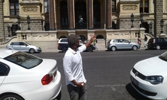
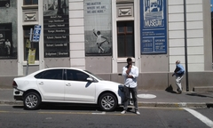
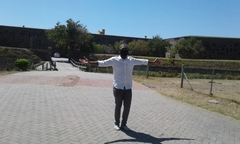

CINGA
SIZANI

Which City

Paris
From Paris being known as the city of love; one gets an eyefull from the Eiffel, to literaly taking a walk through history and it's many stories to tell. Paris would not just another picture for memories
A Foreign Language
| English Phrase | French Phrase |
|---|---|
| How are you? | Comment allez-vous |
| you look beautiful | vous êtes belle |
| what are you doing | que fais-tu |
Historical Places in Cape Town
City Hall
- Cape Town city centre which was built in 1905
- the most widely publicized event held at the Cape Town City Hall is the Festive Lights Switch On
- On 24 July 2018, a statue of Nelson Mandela on the balcony overlooking the Grand Parade was unveiled

District Six Museum
- District Six Foundation was founded in 1989 and the museum in 1994
- The floor of the museum is covered with a big map of the district with hand written notes of former inhabitants
- The museum's goal is to join people into a community where there is respect for dignity, identity and the co-existence of different races.

Castle of Good Hope
- Cape Town Castle is a bastion fort built in the 17th century
- the Castle is the oldest existing building in South Africa
- During the Second Boer War, part of the castle was used as a prison
